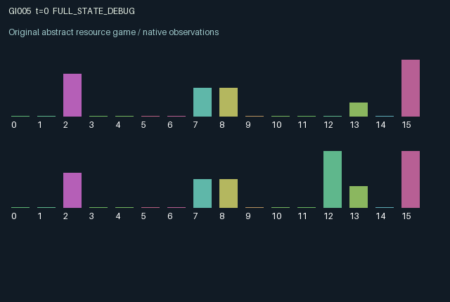

GI005 / LEGACY_ARRAY
Escrow with forfeitable guarantees
2 agents5 actions16 observation columns32 original horizonRuntime: PASS
Release verification episode
Untrained uniform legal actions. Actual JAX state sampled along the full original episode; full-state debug camera. No human performance or learning claim.

Run this game
crucibles play --game 5
Start Python locally, then open the address printed by the terminal. Installation, multiplayer, takeover and keyboard controls →
Objective, rewards & ending
Exact task contract
{
"objective": "Accumulate original per-agent rewards under the interaction rules in mechanism.md.",
"natural_termination": "No early terminal; original t >= 32 horizon.",
"exact_transition_and_reward_source": "def raw_step(self, key, state, actions):\n stocked = jnp.minimum(1.0, state['stock'] + 0.18 * (actions == 0))\n offer = jnp.minimum(stocked, 0.25) * (actions == 1)\n remaining = stocked - offer\n pledge = jnp.minimum(remaining, 0.2) * (actions == 2)\n escrow = jnp.minimum(1.0, state['escrow'] + offer)\n bond = jnp.minimum(1.0, state['bond'] + pledge)\n withdrawn = escrow * (actions == 3)\n forfeited = bond * (actions == 3)\n escrow = escrow - withdrawn\n bond = bond - forfeited\n settlement = jnp.mod(state['t'] + 1, 4) == 0\n matched = jnp.minimum(escrow[0], escrow[1])\n delivered = jnp.ones((2,), dtype=jnp.float32) * matched * settlement\n credit = 0.5 + 0.5 * state['reputation'][::-1]\n consumed = jnp.minimum(remaining - pledge, 0.2) * (actions == 4)\n rewards = (0.65 * delivered * credit + 0.3 * forfeited[::-1] + 0.4 * consumed - 0.35 * forfeited).astype(jnp.float32)\n reputation = jnp.clip(state['reputation'] + 0.15 * delivered - 0.25 * (actions == 3), 0.0, 1.0)\n stock = jnp.clip(remaining - pledge - consumed + withdrawn + bond * settlement, 0.0, 1.0)\n next_state = {\n 't': state['t'] + jnp.array(1, dtype=jnp.int32),\n 'stock': stock, 'escrow': escrow - delivered,\n 'bond': bond * (1.0 - settlement), 'reputation': reputation,\n 'settled': delivered, 'withdrawn': withdrawn,\n }\n done_all = next_state['t'] >= 32\n dones = jnp.full((2,), done_all, dtype=jnp.bool_)\n return self.observe(next_state), next_state, rewards, dones, {\n 'done_all': done_all, 'legal_mask': self.legal_actions(next_state)}"
}Declared per-step reward bounds: -1.0 to 1.0. Observability: source_defined.
Rules
Original mechanism document (historical status wording retained)
# Escrow with forfeitable guarantees Parentless proposal; related to generic bilateral escrow, reputation and assurance mechanisms. No claim of novelty or nonisomorphism is made. Actions 0 replenish inventory, 1 post inventory to escrow, 2 pledge a bond, 3 withdraw one's entire offer and forfeit one's bond, 4 consume available inventory. Every fourth transition matches equal amounts of offers; unmatched offers remain locked. Each settlement refunds remaining bonds. Withdrawals pay a reward to the counterpart through bond forfeiture and lower persistent reputation; reputation changes the partner's later settlement value. Private stock is not shown to the other role. Escrow, bonds, reputation and withdrawal events are public. Both agents determine the amount matched, while withdrawal can reduce the counterpart's pending delivery and supply immediate compensation. Stock, offers and bonds create opportunity costs and delayed effects. Consumption reward competes with commitments. Offers or pledges beyond capacity are discarded by clipping, an explicit storage loss rather than guaranteed conservation. Reward equals 0.65 * delivery * credit + 0.3 * partner forfeiture + 0.4 * consumption - 0.35 * own forfeiture. Delivery, credit and forfeiture are at most 1; consumption at most 0.2. Partner forfeiture requires partner withdrawal, zeroing partner escrow and therefore delivery. Positive reward is at most 0.73 without partner withdrawal, or 0.38 with it; the lower bound is -0.35. No validation or learning claim.
Commands
0Produce stock
1Offer escrow
2Pledge bond
3Withdraw escrow and forfeit bond
4Consume stock
Roles & abilities
agent_0 Original legacy agent; see mechanism and source
agent_1 Original legacy agent; see mechanism and source
Observation permissions
Training receives only the original observation rows. Role cameras use declared visibility; debug cameras are explicitly marked. Local benchmark records log debug exposure and role takeover history.
Exact observation layout
[
{
"slice": [
0,
16
],
"visibility": "exact original observe() below",
"source_code": "def observe(self, state):\n obs = jnp.zeros((2, 16), dtype=jnp.float32)\n obs = obs.at[:, 0].set(state['t'] / 32.0)\n obs = obs.at[:, 1].set(jnp.mod(state['t'], 4) / 3.0)\n obs = obs.at[:, 2].set(state['stock'])\n obs = obs.at[:, 3].set(state['escrow'])\n obs = obs.at[:, 4].set(state['escrow'][::-1])\n obs = obs.at[:, 5].set(state['bond'])\n obs = obs.at[:, 6].set(state['bond'][::-1])\n obs = obs.at[:, 7].set(state['reputation'])\n obs = obs.at[:, 8].set(state['reputation'][::-1])\n obs = obs.at[:, 9].set(state['settled'])\n obs = obs.at[:, 10].set(state['withdrawn'])\n obs = obs.at[:, 11].set(state['withdrawn'][::-1])\n obs = obs.at[:, 12].set(jnp.arange(2, dtype=jnp.float32))\n obs = obs.at[:, 13].set(1.0 - state['stock'])\n obs = obs.at[:, 14].set(state['escrow'] + state['bond'])\n obs = obs.at[:, 15].set(1.0)\n return obs"
}
]Entity visibility & attributes
[]
Actual verification & provenance
Per-game execution receipt
{
"game": "gi005",
"status": "PASS",
"verification_revision": 2,
"source_sha256": "35115eb973c0ade1933abd5da3654e04502b5d7d51d83d3f3317a5744f510fc7",
"seed": 20261101,
"runtime": {
"jax": "0.4.38",
"numpy": "1.26.4",
"devices": [
"TFRT_CPU_0"
]
},
"dimensions": {
"num_agents": 2,
"observation_size": 16,
"num_actions": 5,
"max_steps": 32
},
"checks": {
"eager_reset": {
"status": "PASS",
"seconds": 0.48397350311279297
},
"observation_spaces_legal_masks": {
"status": "PASS",
"seconds": 0.14003229141235352
},
"eager_step": {
"status": "PASS",
"seconds": 0.5295944213867188
},
"jit_reset": {
"status": "PASS",
"seconds": 0.18606877326965332
},
"jit_step": {
"status": "PASS",
"seconds": 0.2971837520599365
},
"eager_jit_integer_parity_float_measurement": {
"status": "PASS",
"seconds": 0.0005228519439697266
},
"jit_vmap_reset": {
"status": "PASS",
"seconds": 0.2499985694885254
},
"jit_vmap_step": {
"status": "PASS",
"seconds": 0.34191179275512695
},
"outer_autoreset_api": {
"status": "PASS",
"seconds": 0.49588584899902344
},
"full_original_horizon_episode_and_render": {
"status": "PASS",
"seconds": 1.0039350986480713
}
},
"human_scores": null,
"browser_controls": "PENDING",
"failures": [],
"elapsed_seconds": 4.185152530670166,
"float_parity_max_abs": 0.0,
"numerical_parity": "EXACT",
"raw_terminal_absorbing": "NOT_PART_OF_ORIGINAL_LEGACY_CONTRACT",
"terminal_outer_reset": "PASS",
"episode_steps": 32,
"scripted_random_returns": [
0.19150002300739288,
0.6257838010787964
],
"terminal": true,
"demo_information": "FULL_STATE_DEBUG",
"demo_frames": 33,
"render_roles_checked": 2
}Chromium control verification
{
"game": "gi005",
"status": "PASS",
"human_scores": null,
"engineering": true,
"checks": [
"catalog_selected_and_real_native_reset",
"dom_queue_and_native_step",
"second_participant_ownership_and_native_joint_step",
"all_roles_individually_controllable_no_role_cap",
"explicit_debug_camera",
"release_to_pure_ai_without_reset",
"close_session_preserves_log"
],
"ui_sha256": "96243f9de144b80b5e20a114330e2206bdcd58d3efc9c6f13bbc08b95cacc14d",
"keyboard": "NO_LEGAL_CARDINAL_COMMAND_FOR_ROLE0_AT_RESET",
"seconds": 3.6112823486328125
}Original identity and file hashes
{
"id": 5,
"key": "gi005",
"title": "Escrow with forfeitable guarantees",
"summary": "",
"tags": [],
"family": "legacy_array",
"dimensions": {
"num_agents": 2,
"observation_size": 16,
"num_actions": 5,
"max_steps": 32
},
"source_sha256": "35115eb973c0ade1933abd5da3654e04502b5d7d51d83d3f3317a5744f510fc7",
"manifest_sha256": "8d5d2974abb81874d556ff1540850d38683415731bab982484dc055f23433318",
"files": [
{
"file": "candidate.py",
"sha256": "35115eb973c0ade1933abd5da3654e04502b5d7d51d83d3f3317a5744f510fc7",
"bytes": 3444,
"origin": "work/exp_2/astra_generation/discovery_v2/initial/candidate_00005/attempt_00/candidate.py"
},
{
"file": "mechanism.md",
"sha256": "136c230bd62b275dc010fac52d0ffd05fcaa7d07f993da489ff455ccf7ae0276",
"bytes": 1527,
"origin": "work/exp_2/astra_generation/discovery_v2/initial/candidate_00005/attempt_00/mechanism.md"
}
],
"original_status": "LEGACY_SOURCE",
"original_saved_replay": false,
"release_validation": "PASS",
"human_scores": null,
"browser_validation": "PASS"
}